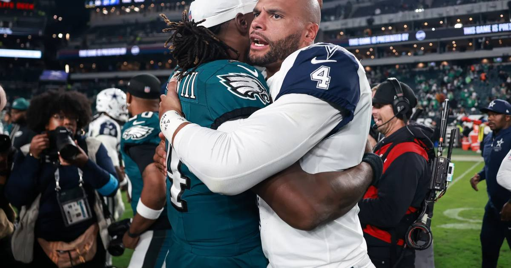

Eagles rally from 21 down to stun Cowboys 39-38 on Thanksgiving
Down 31-10 late in the third quarter, the Eagles stormed back behind Joe Milton's four touchdowns and DeVonta Smith's career-high 200 receiving yards, winning 39-38 on Jake Elliott's 59-yard field goal with two seconds left — the biggest comeback in NFL Thanksgiving history.

Disclosure: this post contains affiliate links. I earn a commission on qualifying purchases.
The Philadelphia Eagles trailed the Dallas Cowboys 31-10 late in the third quarter on Thanksgiving. They won 39-38.
Jake Elliott drilled a 59-yard field goal with two seconds left at AT&T Stadium to complete the biggest comeback in NFL Thanksgiving history, capping a fourth quarter in which Philadelphia outscored Dallas 22-7. It was also the Eagles' biggest comeback ever against the Cowboys, and their fourth-biggest against any opponent.
How the comeback unfolded
Dallas looked like it had the game wrapped up. The Cowboys led 28-10 at halftime behind three first-half touchdowns from Javonte Williams, and Brandon Aubrey's 59-yard field goal early in the third made it a three-score game.
Then the Eagles finally found the offense that had been missing all season. Philadelphia had not scored more than 24 points in any game this year and was averaging 16.7 points per game — then put up 22 in the fourth quarter alone, more than in any of their last eight games.
The rally started late in the third, when Joe Milton hit DeVonta Smith for a 45-yard touchdown to cut it to 31-17. Early in the fourth, Ty Robinson blocked a Dallas punt and Kenny Moore II recovered it in the end zone, making it a one-score game. Dallas answered on Dak Prescott's 14-yard touchdown run, but after a 55-yard Britain Covey kick return, Milton responded with a 15-yard touchdown run of his own to pull Philadelphia within 38-30.
Milton's third touchdown pass of the day — a 24-yarder to rookie Makai Lemon with 2:10 left — made it 38-36. The Eagles failed the two-point try for the second time, so they still needed the ball back. They got it in dramatic fashion: Cowboys coach Brian Schottenheimer went for it on fourth-and-1 from the Philadelphia 39 with 55 seconds left, and Prescott was sacked. Milton drove the Eagles into range, Elliott split the uprights from 59, and Andrew Mukuba's toe-tap interception on the final play sealed it.
Milton beats his old team
The win belonged to Milton. In his third career start — and his first road start — the 26-year-old threw for 331 yards with three touchdown passes and a 15-yard scoring run, finishing with a 121.8 passer rating despite one interception.
The revenge angle was real. Milton spent more than a year with the Cowboys, learning behind Prescott, before Philadelphia signed him off Dallas' practice squad on October 16. He had played one game with Smith before Thursday. He threw him two touchdowns anyway.
All three of Milton's scoring passes came from outside the pocket. The first was the play of the game: flushed to his left, he waved Smith downfield and heaved the ball roughly 65 yards through the air from the Eagles' 42 for a 50-yard touchdown, with Smith boxing out cornerback Cobie Durant in the end zone.
Smith's career night
Smith finished with 11 catches for a career-high 200 yards and two touchdowns on 14 targets. The yardage total was the most by an Eagle since DeSean Jackson had 210 in Dallas in 2010, and the sixth-most in franchise history. He had just five touchdowns of at least 45 yards in his entire career before Thursday — he had two in one game.
He did it while banged up, leaving the field briefly with an apparent back injury after landing hard on an incompletion in the fourth quarter, then returning for a 5-yard catch on the final drive.
Elijah Moore added three catches for 57 yards, and Lemon's late touchdown was his latest big moment as a rookie.
What it means
Philadelphia improved to 4-7 with its second consecutive victory, avenging a 38-21 loss to Dallas in Week 7. The Eagles did it shorthanded: Jalen Hurts was out, Saquon Barkley left in the first quarter with a stinger, Dallas Goedert hurt his shoulder, and Cooper DeJean left with a concussion.
Dallas fell to 5-7, and the loss is a serious blow to its playoff hopes. The Cowboys came in averaging 30.6 points per game and led by three scores at home on Thanksgiving — and still found a way to lose.
Elliott, for his part, keeps building a case as one of the clutch kickers in the league. He is now 4-for-5 in his career on attempts of 59 yards or longer, and his four makes from that distance are tied for the fifth-most in NFL history.
Sources
• Game Recap: Eagles 39, Cowboys 38 — PhiladelphiaEagles.com
• Eagles mount furious comeback, beat Cowboys 39-38 in Thanksgiving classic — NBC Sports
• Jake Elliott's 59-yard field goal with 2 seconds left gives Eagles stunning 39-38 win over Cowboys — Associated Press via LA Post
• Instant analysis of the Eagles' stunning 39-38 win over the Cowboys — Eagles Wire
• Live updates as Eagles visit rival Cowboys on Thanksgiving Day — NBC Sports Philadelphia
Gear up: Fanatics